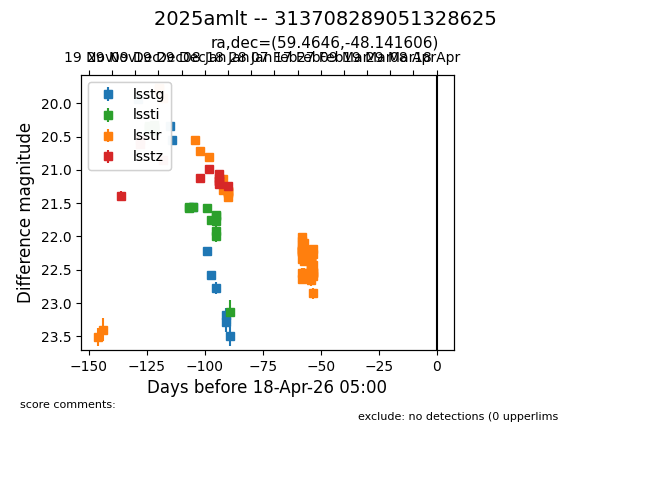
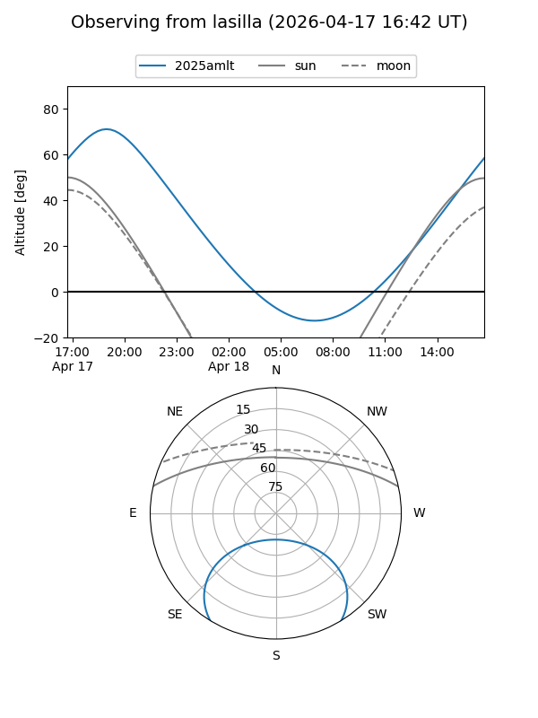
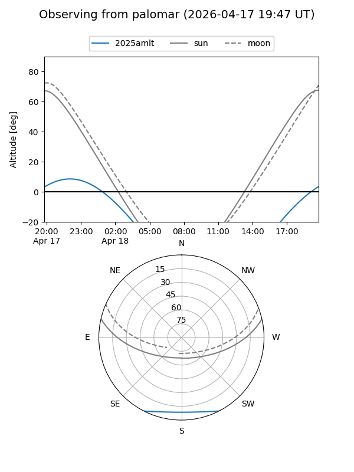

2025amlt
Target 2025amlt at 2026-04-18 05:05
Aliases and brokers:
TNS: link
YSE: link
alt names
313708289051328625 (lsst,fink_lsst)
2025amlt (tns,yse)
Coordinates:
equatorial (ra, dec) = 59.4646,-48.14161
equatorial (HMS+DMS) = 03:57:51.51,-48:08:29.78
galactic (l, b) = (256.0367,-48.38507)
Flags:
Photometry:
last lsstg=nan, lssti=nan, lsstr=22.18, lsstz=nan
15 lsstg, 43 lssti, 53 lsstr, 14 lsstz detections
Lightcurve

Visibility


Additional plots